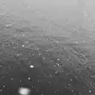
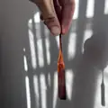
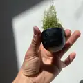
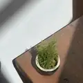
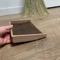
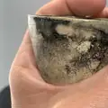
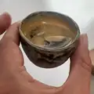
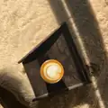
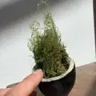
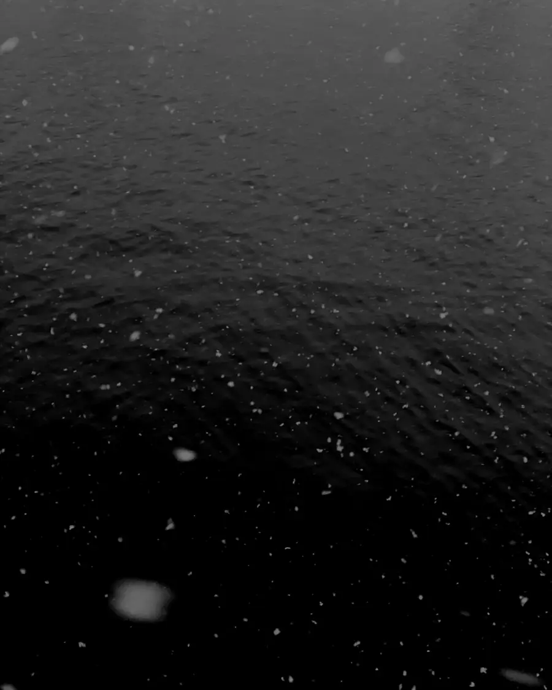

sound
Lofi music as Mothers Moniker and Lost Coffee.
Mothers Moniker
Spotify ↗[Gill adds] Apple Music link
Lost Coffee
licensing
For licensing, write to imjamesgill@gmail.com.
imjamesgill@gmail.com subject: music licensing

photograph 8photograph 9photograph 10photograph 11photograph 12photograph 13photograph 14
photograph 15photograph 16photograph 17photograph 18photograph 19photograph 20
photograph 21
photograph 22photograph 23photograph 24photograph 25photograph 26photograph 27photograph 28photograph 29photograph 30
photograph 31photograph 32photograph 33photograph 34
photograph 35
photograph 36photograph 37photograph 38
photograph 39photo39 photographs
planter cup with mossjoio.co cupcrescent rim of a cupholding a joio.co cupjoio.co cup on a boardjoio.coceramics
Cinematographer + Artist + Spatial Designer
I am GillI am JamesI am an artista Cree voice risingweaving sound into the unseenIndigenous kin, my culture’s pulsevisual arts
Lofi music as Mothers Moniker and Lost Coffee.
Spotify ↗[Gill adds] Apple Music link
For licensing, write to imjamesgill@gmail.com.
imjamesgill@gmail.com subject: music licensing